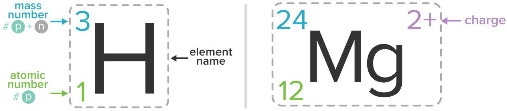
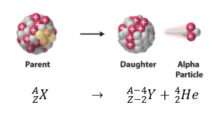
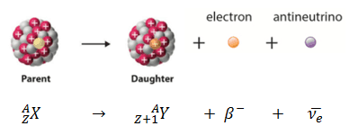
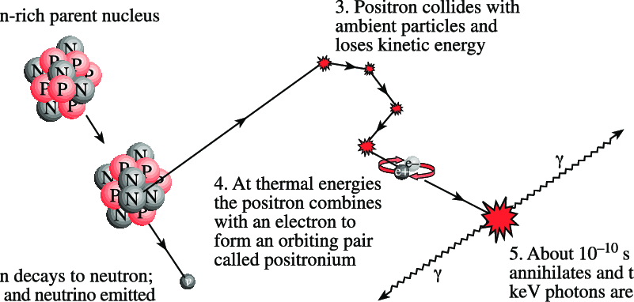
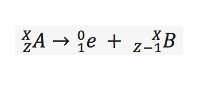
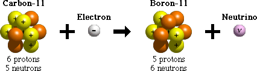
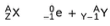
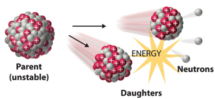
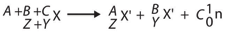

Understanding Types of Radioactive Decay
Nomenclature note!
The chemical symbol & the atomic mass define each nuclide. Isotopes from the same element have the same number of protons, but a different number of neutrons (& therefore a different mass) in their nucleus.
Z corresponds to the number of protons (atomic number). This determines the chemical element.
N corresponds to the number of neutrons. This determines the isotope of the element.
A corresponds to the mass of the isotope (mass number). This is also the sum of Z & A.

Below are two examples of how this nomenclature is used when written/typed. A is written on the top left of the element name & Z is written on the bottom left. Since N can be determined by subracting Z from A, it is not usually written; however, it can be written on the bottom right of the element name (not shown). Additionally, the charge can also be written on the top write of the time element name.
Source for image above: Khan Academy.
Types of Radioactive Decay
| Decay Type | Change in mass | Change in atomic number |
|---|---|---|
| Alpha | Decrease by 4 | Increase by 1 |

Alpha decay occurs when the nucleus ejects an alpha particle (helium nucleus).
Source for image above: nuclear-power.net.
| Decay Type | Change in mass | Change in atomic number |
|---|---|---|
| Beta | Remains the same | Increase by 1 |

Beta decay occurs in 2 ways. One way, beta-minus decay, occurs when the nucleus emits an electron and an antineutrino in a process that changes a neutron to a proton. The second way, beta-plus decay, occurs when the nucleus emits a positron and a neutrino in a process that changes a proton to a neutron, this process is also known as positron emission.
Source for image above: nuclear-power.net.
| Decay Type | Change in mass | Change in atomic number |
|---|---|---|
| Gamma | Remains the same | Remains the same |

When gamma decay occurs, a radioactive nucleus decays by the emission of an alpha or beta particle. The daughter nucleus that results is usually left in an excited state and it can decay to a lower energy state by emitting a gamma ray photon.
Source for image above: nuclear-power.net.
| Decay Type | Change in mass | Change in atomic number |
|---|---|---|
| Positron Emission | Remains the same | Decrease by 1 |
When positron emission occurs, extremely neutron-rich nuclei, formed due to other types of decay or after many successive neutron captures, may lose energy (via neutron emission). This causes a change from one isotope to another of the same element.

Source for image above: ResearchGate.

Source for image above: Vassar College WordPress.
| Decay Type | Change in mass | Change in atomic number |
|---|---|---|
| Electron Capture | Remains the same | Decrease by 1 |
In electron capture, the nucleus captures an orbiting electron. This causes a proton to convert into a neutron. A neutrino and a gamma ray are also emitted.

Source for image above: JLab.

Source for image above: Socratic.
| Decay Type | Change in mass | Change in atomic number |
|---|---|---|
| Spontaneous Fission | Remains the same | Decrease by 1 |
In spontaneous fission, a very heavy nuclei breaks into 2 new particles of unequal sizes. These new elements have different atomic masses & atomic numbers. Neutrons, energy, & various other fission products are emitted.


Source for images above: Chemistry LibreTexts.